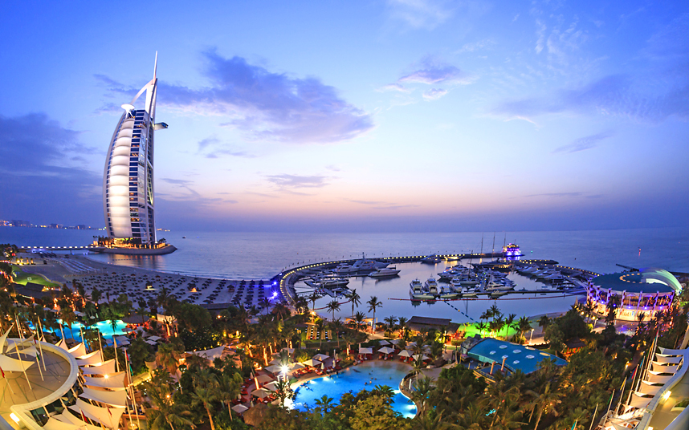
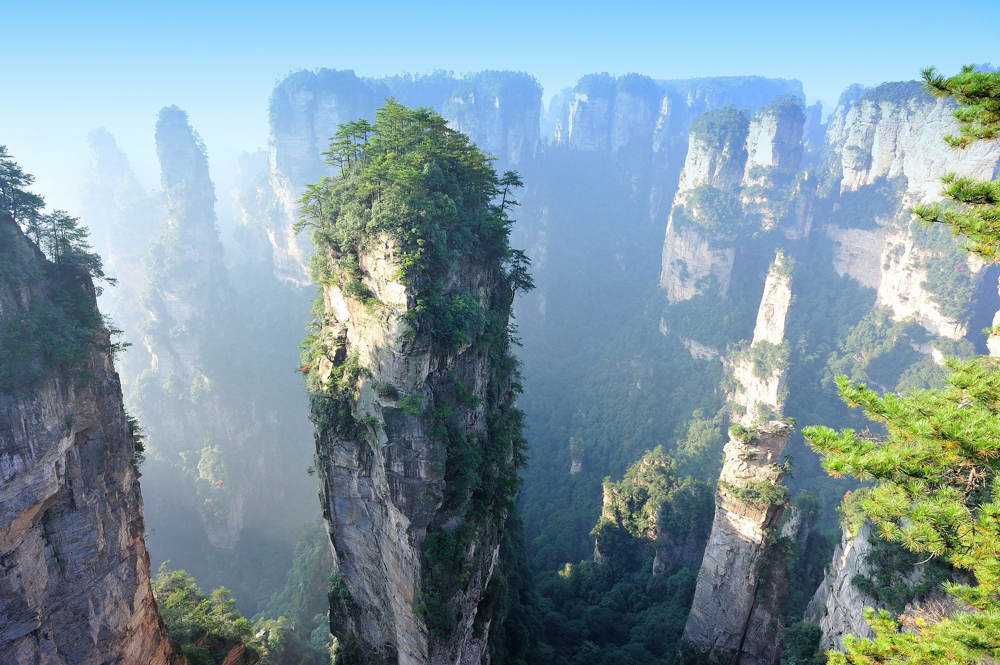
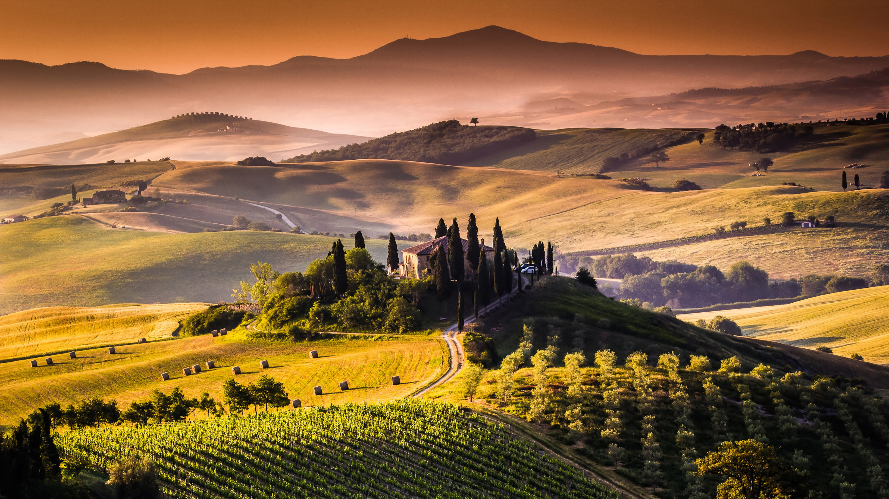
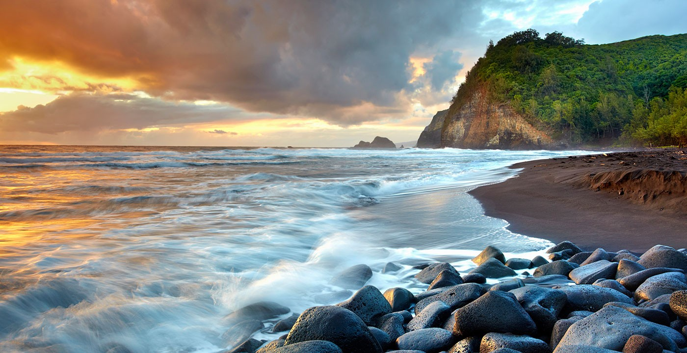
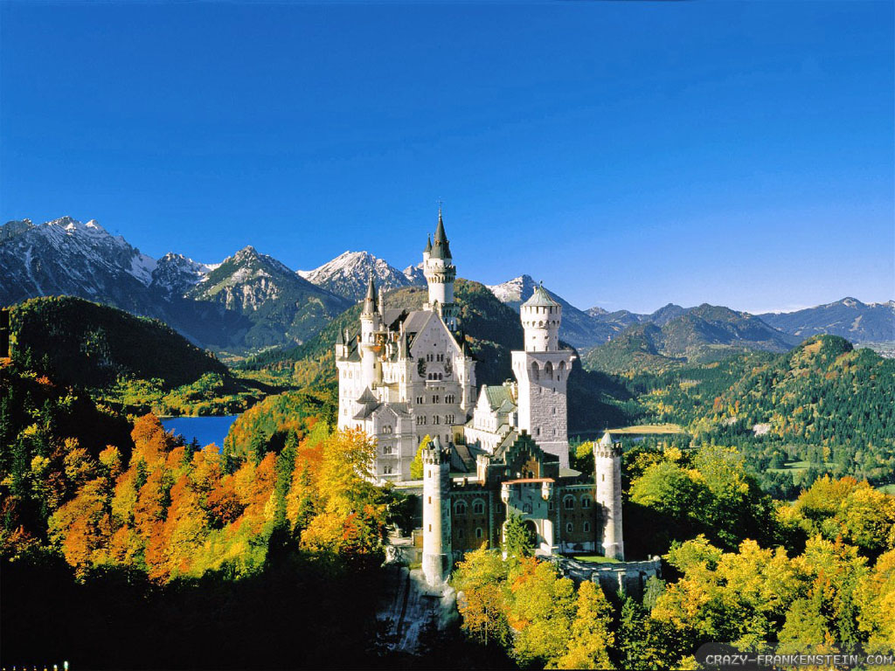
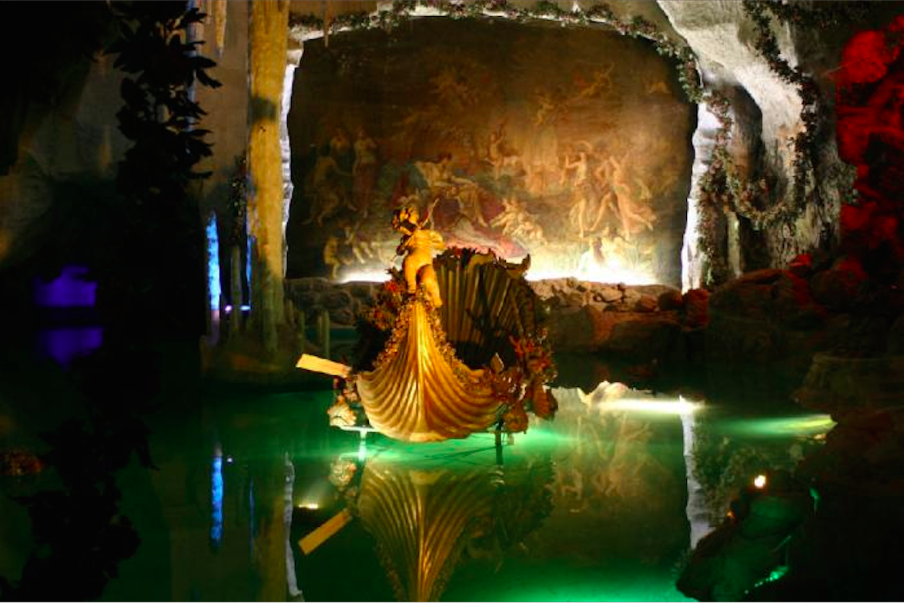
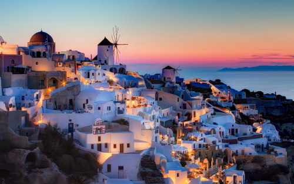

Santorini, Greece

Santorini really isn't like the rest of the world - it's much brighter and joyful. This island may well have conquered the edge of your imagination, with bright blue candy-colored houses that match nicely with the whitewashed walls, meant to represent the colors of the Greek flag. Santorini is what remains of a huge volcanic eruption that destroyed the earliest settlements, an island in the middle of the blue sparkling sapphire waters of the Mediterranean, with colorful pumice cliffs that rise above a beautiful caldera. Santorini is best known for it's beautiful sunset, which glows radiantly with different tints, and the wines and olives produced.
Maldives

Maldives is home to possibly the best beaches in the world, with sparkling blue waters and powdery sand you'll find no where else in the world, Maldives is an Indian Ocean Paradise that is the true vacation of a lifetime. Every resort in Maldives has its own private island, and there are hundreds to choose from, ranging from underwater glass domes to hotels suspended in the middle of the ocean. Maldives offers unrivalled luxury, providing private butlers, personal pools, in-room massages, etc. The five and six star hotels there are suitable for families, honeymooners, and nature-lovers.
Dubai, United Arab Emirates

Dubai is best known for its extravagant, luxurious shopping malls, ultramodern architecture, and lively night life. It is home to the Burj Khalifa, the tallest man-made structure in the world, with a height of roughly 830 meters and 24000 window panels installed. The Burj Al Arab, another iconic Dubai landmark, is the tallest and perhaps one of the most luxurious hotels in the world (Shown behind is the presidental suite). Dubai is truly a place to have a time of your life, for visiting Dubai is like visiting the future.
Zhangjiajie, China

Recognize this place in Northwest Hunan to be the floating islands of Pandora from Avatar? Zhangjiajie has quartzite sandstone pillars rising above the ground like nowhere else, it is one of the most remarkable landscapes in all of China, and truly looks like what would come out of another world, especially when white mist curls around the pinnacles that dominate most of the scenery.
Tuscany, Italy

Tuscany has some of the world's most recognizable Renaissance art and architecture, from Michaelangelo's 'David' to the Leaning Tower of Pisa. This fertile landscape is filled with golden wheat fields, vineyards, and medieval villages on the hilltops, Tuscany flourishes with art that is truly incomparable.
Yosemite National Park, California, USA

Yosemite National Park, the third oldest park in the US (After Yellowstone and Sequoia and Kings Canyon), is a real jaw-dropper, best known for its renowned ancient sequoias, waterfall streaked granite cliffs, sparkling lakes and wildlife, Yosemite attracts four million visitors anually.
Bigar Waterfall, Romania

The waterfall at Ivorzul Bigăr is one of the most beautiful in the world. Though not as large as Niagra or Yosemite falls, this place is a hidden paradise. The sparkling, clear blue water that flows onto green rocks almost seems to glow luminously, resembling what seems to come out of a fairytale. There is a legend that describes a peasant family who goes to seek a witch because they bore no kids, but it is possibly made up to attract more tourists.
Venice, Italy

Venice, a city with an amazing romantic atmosphere, is definitely one of the top places to travel to before you die. With its grand marble palaces rising out of the water, gondolas, canals, travelling through Venice is just like travelling through a painting. Venice is simply a city unlike any other. The canal snakes through the city, gleaming with sunlight. There are no roads or highways in Venice. The only way to get around is by boat, as the area is built over 100 small islands on a lagoon.
Big Island, Hawaii, USA

Hawaii, with beautiful multicolored tropical beaches, volcanos that occasionally send lava running down the black rocky cliff faces that light up the scenery like fireworks, it is surely an iconic landmark of the US.
The Pursuit

Boundless

The Spectators

You really got me

Ad Infinitum

Different.

Elysium
